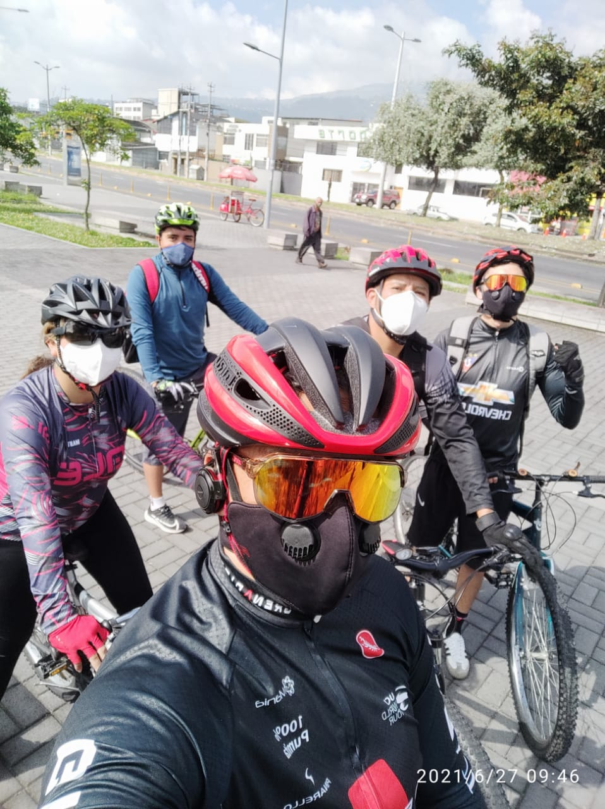
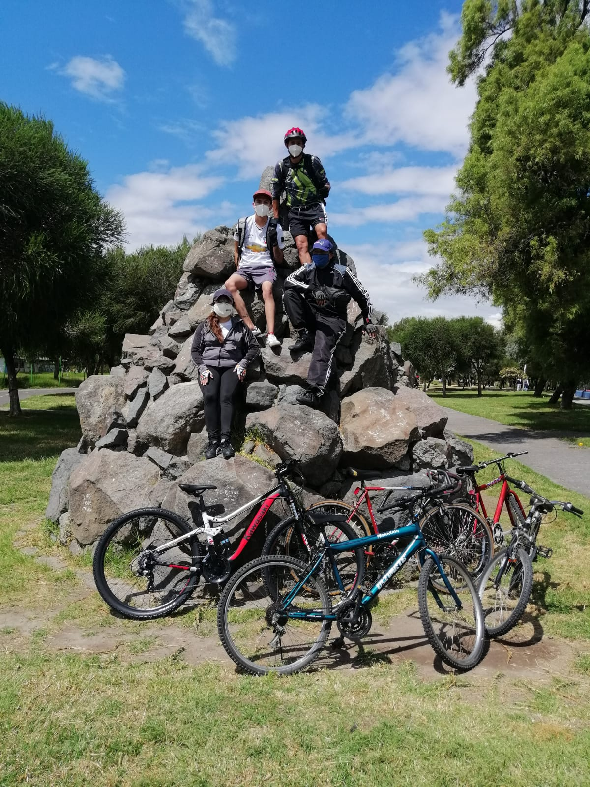
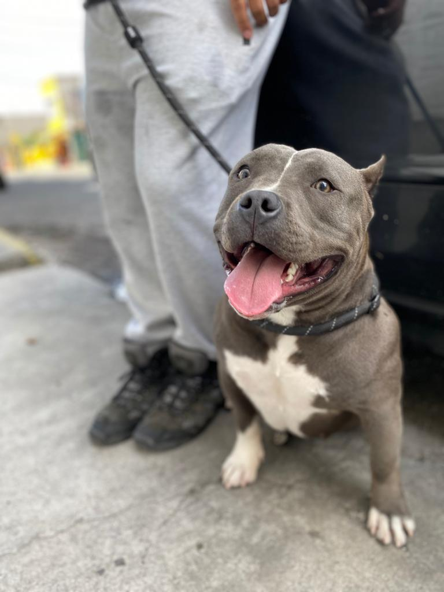
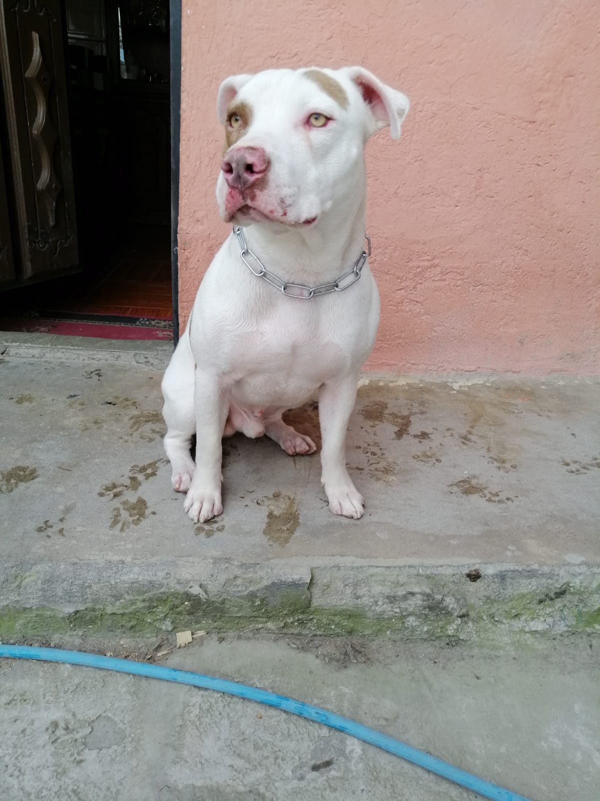
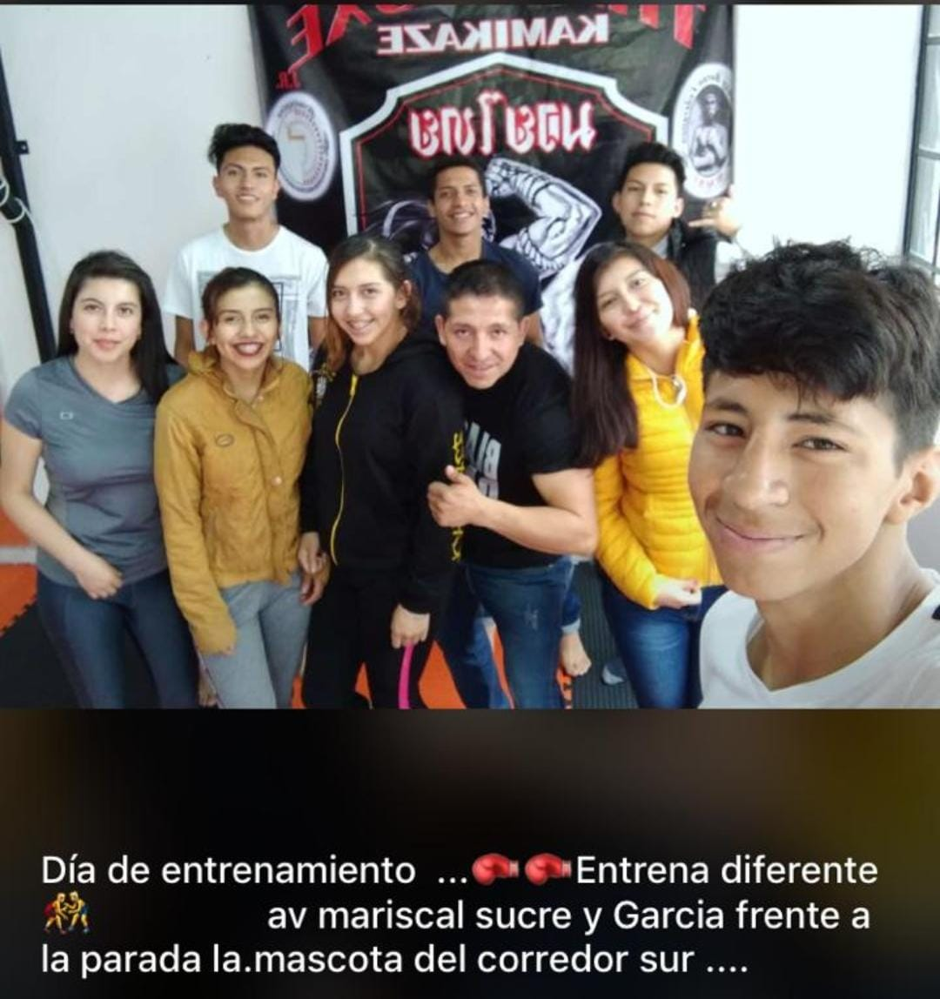
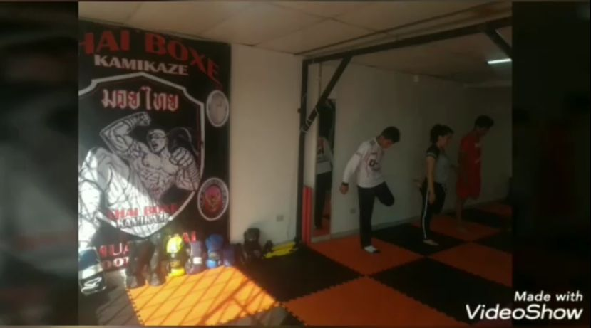
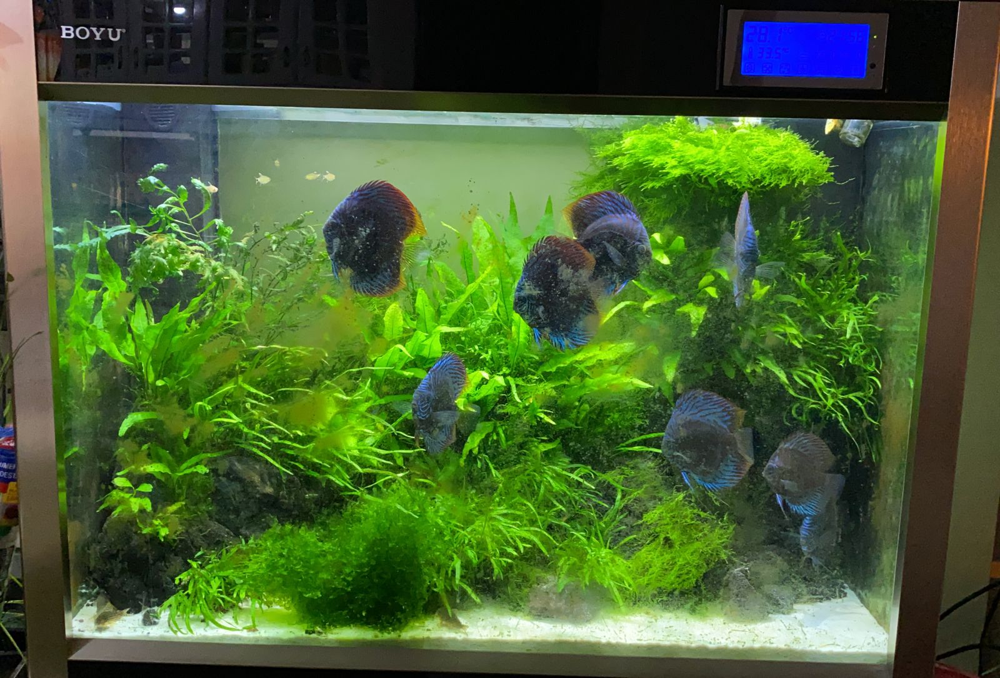
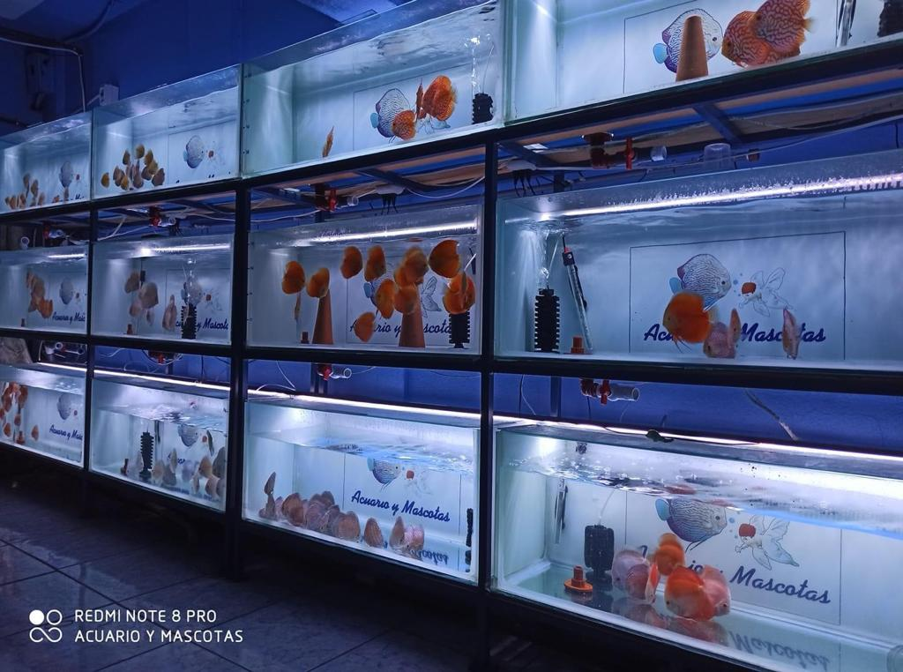

Hobbies
- Ciclismo  
- Pasear perros  
- Artes marciales  
- Acuarismo  
Soy una persona que le gusta mucho salir en bicicleta, disfrutar los paisajes y luegares donde se puede acceder con ella, ir a mi propio ritmo, es una experiencia maravillosa que ni caminar ni andar en auto se puede comparar.
Mis animales favoritos son los perros, me gusta mucho compartir con ellos, en mi casa hay un total de 8 perros, los perros necesitan mucho mas cuidados que solo darles de comer, necesitan que juegues con ellos, que compartas con ellos, y es así que empezo mi rutina de pasear perros, así ellos pueden liberar el estres de sentirse encerrados en casa, y yo puedo caminar,relajarme y disfrutar de la ciudad con mi mascota.
Soy una persona muy diciplinada, y las artes marciales ofrecen muchos benefecios, como salud mental y física, me gusta hacer mucho ejercício y con las artes marciales complemento esto, ya que tambien es una muy buena alternativa para poder defenderte. Es un deporte de contacto que me ayuda a liberar mucha adrenalina y estrés que se puede producir a lo largo de los dias.
Ser acuarista con lleva mucha paciencia y esfuerzo, el tener un acuario saludable para la vida maritima con lleva mucho conocimiento e interes sobre el tema.